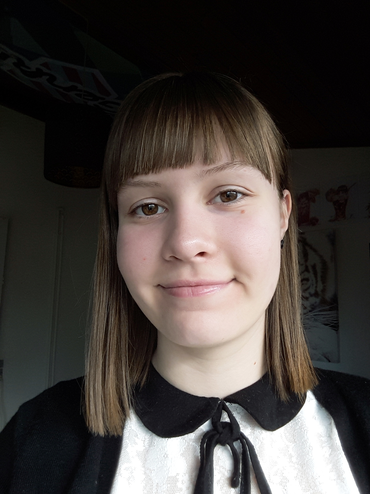

Tilbage
Om mig
Mit navn er Line, og jeg er 19 år gammel. Jeg tager på nuværende tidspunkt uddannelsen som multimediedesigner på KEA og har indtil videre studeret et halvt år.
Jeg interesserer mig specielt for kunst og grafisk design. Jeg elsker at udtrykke mig visuelt, og gør meget brug af dette i min fritid, hvor jeg blandt andet tegner.
Jeg er som udgangspunkt startet på MMD, da jeg i fremtiden ønsker at arbejde med grafisk design, logoer og hjemmesider.
Mine nuværende mål er at blive bedre til at kode og animere.
